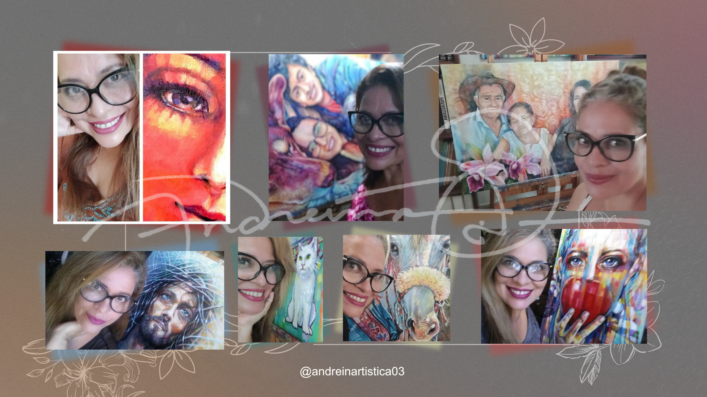
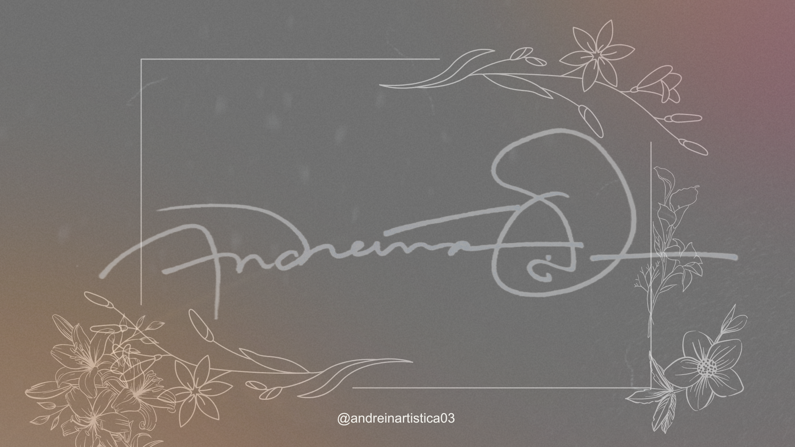
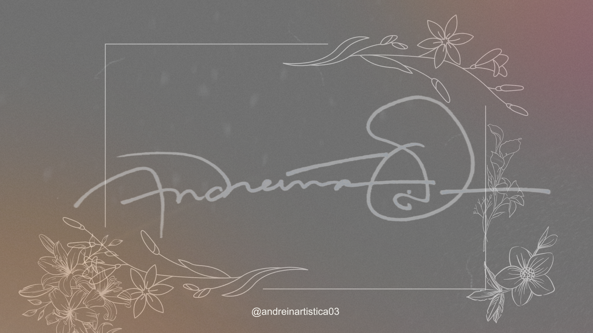
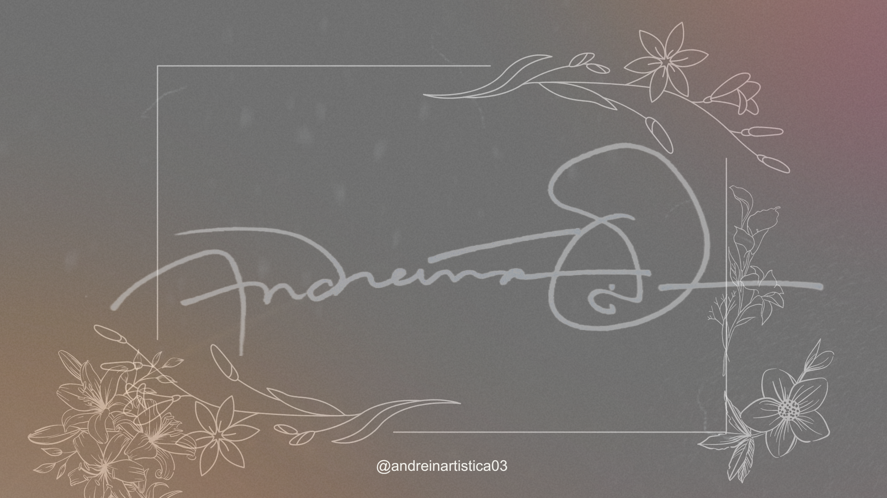
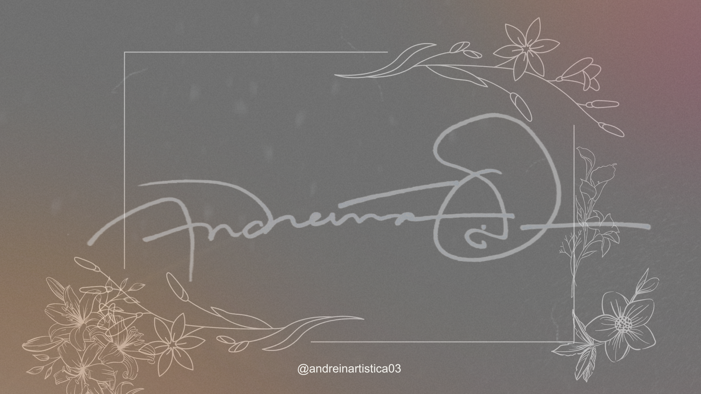
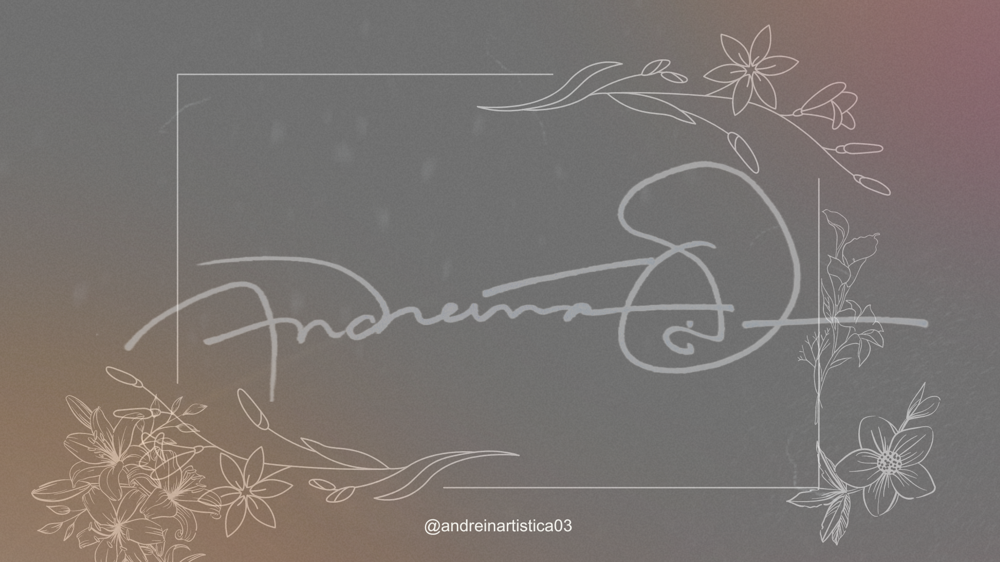

![Collage pictures Anreina, sus obras y presentación. El cual dice lo siguiente. "Flor Andreína Orellana, arquitecta y artista venezolana, crea obras versátiles con un predominio de figuras, rostros y retratos, revelados en colores intensos y atrevidos, con trazos fuertes y definidos. Su estilo a menudo coquetea con paisajes urbanos y naturales, con una clara tendencia moderna y aformal. Sus obras resaltan virtudes humanas como la alegría, el optimismo, la confianza, la fe, la esperanza y el futuro, reflejando estos valores a través de su uso vibrante del color."](./img/Collage Presentación.png) 


